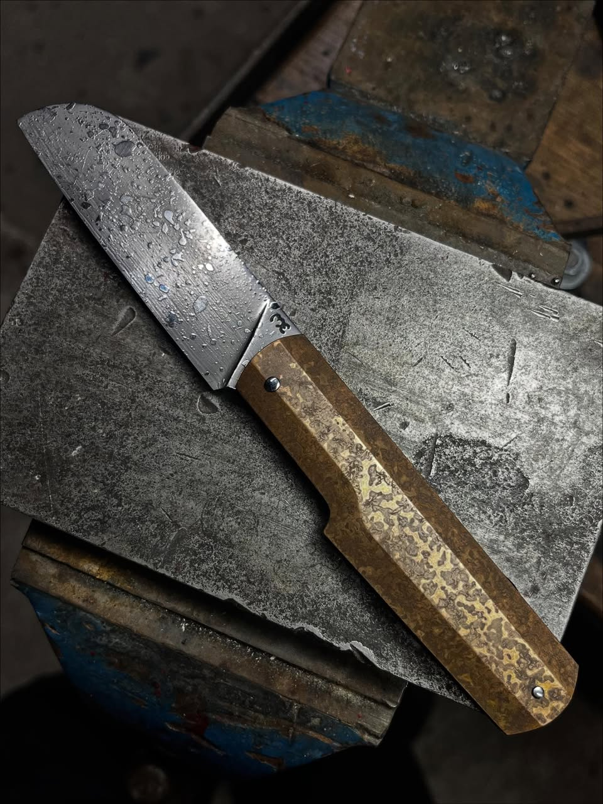
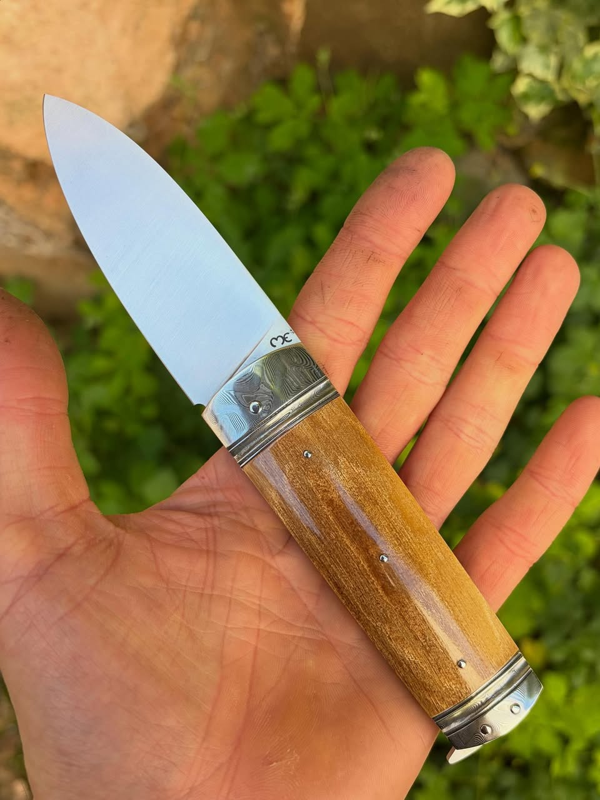
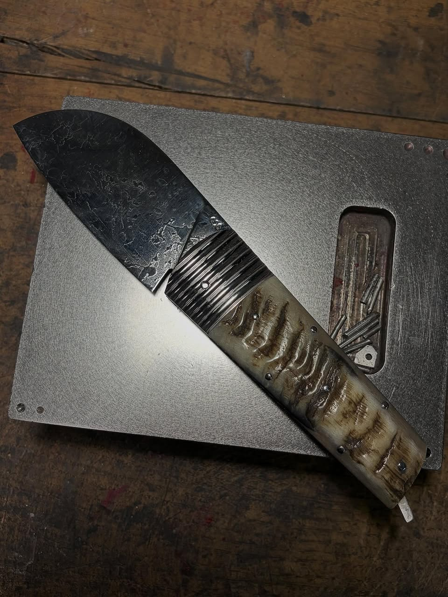

Le Sabal
Ligne élégante et contemporaine.
- Bois précieux
- Corne
- Damas
- Inox 14C28N
Installé à Thiers, capitale française de la coutellerie, je réalise chaque couteau à la main dans le respect des traditions artisanales.
Chaque pièce est personnalisable grâce à un large choix de matériaux de manche et de finitions de lame.

Ligne élégante et contemporaine.

Inspiré du couteau traditionnel écossais.

Un classique revisité.

Atelier situé à Thiers
Téléphone : 06 XX XX XX XX
Email : contact@atelier-coutelier.fr